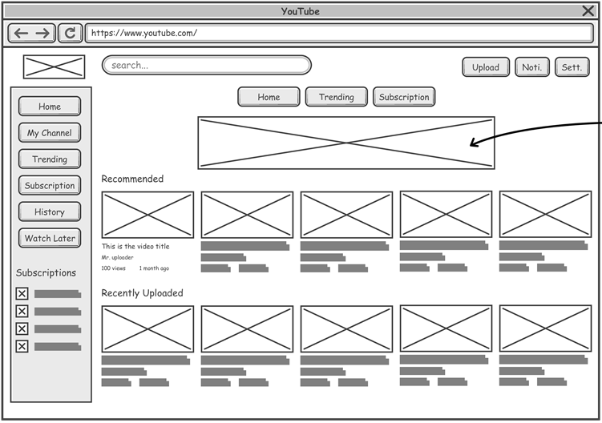
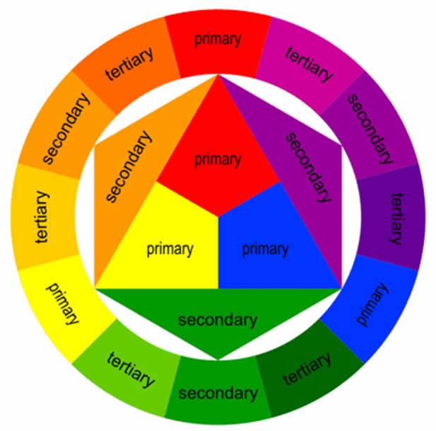

As the company hires the employees, they expect them to meet the expectations of their job as well as to fit in the work team and easily get along with their colleagues. Thus it is important for employees to have a range of skills that will help them to meet employer’s criteria and to be an excellent choice for their job. In general, skills can be divided into 2 categories: social (interpersonal) and professional.
Interpersonal Skills (at the workplace)
Interpersonal skills are the behaviours and tactics a person uses to interact with others effectively. The main examples of interpersonal skills include:
- Teamwork
- Communication
- Active Listening
- Dependability
- Responsibility
- Empathy
- etc.
Professional Skills (as a Web Developer)
Languages
HTML (HyperText Markup Language)
HTML (HyperText Markup Language) is the standard markup language used to create web pages. A markup language is a way of describing the content of a web page to define how information (text, pictures, etc.) should be displayed on the page. For example, take a look at this web page. For example, take a look at this web page. All of the text that is written here is displayed using HTML.
CSS (Cascading Style Sheets)
CSS (Cascading Style Sheets) is the language that is used to describe the style of a web page. HTML is used to create the content of a web page, and CSS is the language that describes how that page created using HTML should look. Once again, look at this webpage. Fonts, colours, background, menu animations, text and pictures’ sizes - all of this is described with CSS. Even though both HTML and CSS are not considered as programming languages (as they are not used to do any of the calculations), they are, without a doubt, the most important tools for a web developer.

Javascript
Javascript (or JS) is the programming language that is used to create interactive features on a website such as pop-up windows, forms, complex page animations, sending and processing forms, etc.

Website Design
Website Sketches
A sketch is one of the initial steps in the brainstorming process of any web design project. Sketching can be used as the design progresses to help clarify ideas and provide meaningful feedback.
Colour Theory
Colour theory is the collection of rules and guidelines which designers use to communicate with users through appealing colour schemes in visual interfaces. Developers usually use the colour wheel that helps them to pick the best colours for their website. Experienced developers know to concepts of the colour theory, and what colours harmonize together. Although, beginner developers usually use websites like Paletton to help them to pick appealing colours.
